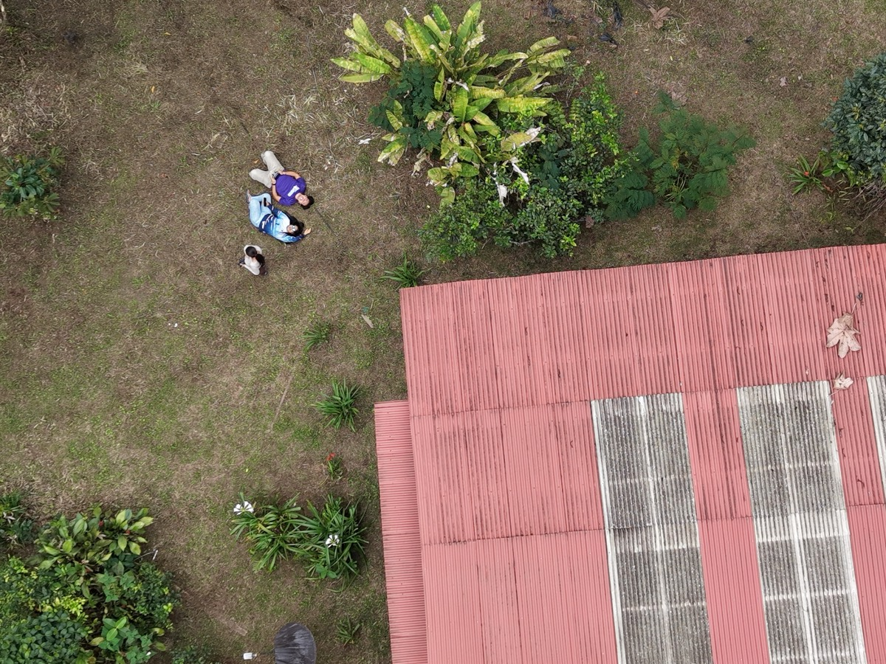
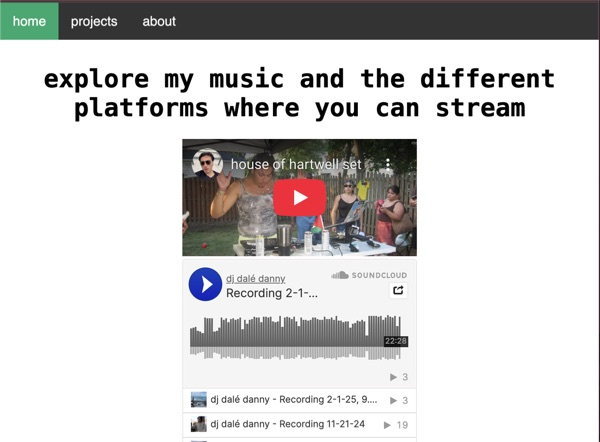
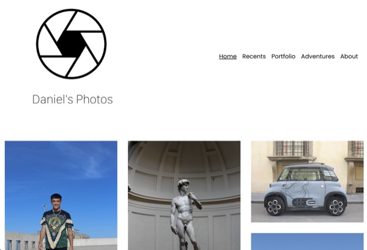
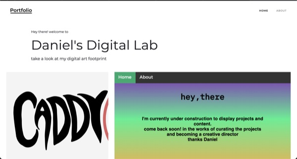

projects
What I'm building and researching right now: AI that runs close to the user, and what it takes to make it hold up. Plus the work that happens away from a keyboard.
AI & research
now, fall 2026research · ECE 424 · current
Do prompt-injection defenses hold up on local LLMs?
We ran 5 attacks against 10 published defenses on three open-weight models through Ollama: 150 experiments and about 48,000 model calls.
AI assistant · in progress
Calendario
Ask your Google or Outlook calendar questions in plain language. A Cohere model works out what you mean, then the app answers from your real schedule.

capstone · edge AI
Watermelon ripeness scanner
A CNN on a Raspberry Pi 5 + Hailo-8L, 90.4% validation accuracy.
see the researchlive demo
Watch an injection land
An interactive animation of the attacks, built from the final 100-case runs on all three models.
db444.xyz/attack-demobeyond the code
field work, music and photos
field work · Ecuador
Bosque Protector Los Cedros
Drone 3D scans of the ridge line and a storytelling map with the community.
read the story
DJ · mixes
My music library
Mixes, releases and sets on YouTube, SoundCloud, Spotify and Apple Music.
listen
photography
Daniel B Photos
The photo journal.
visit
web
Daniel's Digital Lab
The Webflow lab, still under construction.
visitfrom the repos
the rest lives on GitHubgithub.com/d-baez
GitHub
Everything that never got its own page here.
browse the repos